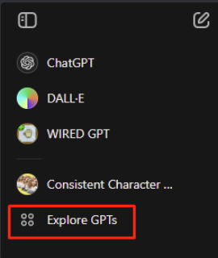

WIRED GPT
WIRED KI-Prototyp
Eine Künstliche Intelligenz, die Wireds versteht? Ja! lies weiter...
Mit dem Chatbot "ChatGPT" von OpenAI können nun benutzerdefinierte Versionen von ChatGPT erstellt und veröffentlicht werden. Diese KI versteht die menschliche Sprache ziemlich gut und reagiert auf deine Text-Eingaben (Mittlerweile sogar auch Bild-Eingaben usw.). Jedenfalls habe ich mithilfe von Custom GPTs ein GPT so angepasst, dass dieser zumindest die Auslöser von Wireds verstehen kann, wenn auch nicht perfekt. Wie so oft muss eine Eingabe manchmal mehrmals gesendet werden, um gute Ergebnisse zu erzielen. Das ist bei jeder KI üblich. Wenn das für dich völliges Neuland ist, dann können dir folgende Links weiterhelfen:
https://youtu.be/yf783C-mnk4?si=4eX3ptpefclgCWGZ
https://www.youtube.com/watch?v=_fYUaTA9dTI
Zurück zum eigentlichen Thema. Custom GPTs können zwar nur von Plus-Konto-Nutzer erstellt werden, aber es ist jetzt möglich die bereits Erstellten mit der kostenlosen Version auszuprobieren. Auf der oberen linken Seite ist der GPT Store unter "Explore GPTs" zu finden.
Mit dem Chatbot "ChatGPT" von OpenAI können nun benutzerdefinierte Versionen von ChatGPT erstellt und veröffentlicht werden. Diese KI versteht die menschliche Sprache ziemlich gut und reagiert auf deine Text-Eingaben (Mittlerweile sogar auch Bild-Eingaben usw.). Jedenfalls habe ich mithilfe von Custom GPTs ein GPT so angepasst, dass dieser zumindest die Auslöser von Wireds verstehen kann, wenn auch nicht perfekt. Wie so oft muss eine Eingabe manchmal mehrmals gesendet werden, um gute Ergebnisse zu erzielen. Das ist bei jeder KI üblich. Wenn das für dich völliges Neuland ist, dann können dir folgende Links weiterhelfen:
https://youtu.be/yf783C-mnk4?si=4eX3ptpefclgCWGZ
https://www.youtube.com/watch?v=_fYUaTA9dTI
Zurück zum eigentlichen Thema. Custom GPTs können zwar nur von Plus-Konto-Nutzer erstellt werden, aber es ist jetzt möglich die bereits Erstellten mit der kostenlosen Version auszuprobieren. Auf der oberen linken Seite ist der GPT Store unter "Explore GPTs" zu finden.

GPT Store
Dort angekommen könnt ihr nach den WIRED GPT suchen oder was ihr sonst gern ausprobieren möchtet.
Alternativ klickt ihr einfach auf den Link und öffnet direkt den WIRED GPT, wenn ihr bereits ein Konto habt: https://chatgpt.com/g/g-VacrbeJPu-wired-gpt
Was kann der WIRED GPT bereits und wo sind noch Grenzen?
Das lässt sich am einfachsten durch Beispiele zeigen. Aber einige Infos vorweg. Es handelt sich um einen Prototyp und die WIRED GPT KI wird definitiv noch Fehler machen. Zurzeit besitzt dieses GPT nur das Wissen über Auslöser-Wireds und das grundlegendste Stapel-Wissen. Es ist noch in der Aufbauphase aber ich möchte euch den Zugang gewähren, damit ihr bereits Erfahrungen sammeln könnt. Die KI kann nämlich bereits jetzt schon ein paar nützliche Dinge tun.
Beispiel 1 - WIRED GPT erklärt was Wireds sind:
Beispiel 1 - WIRED GPT erklärt was Wireds sind:
Beispiel 2 - WIRED GPT nennt einige Auslöser mit ihren Funktionen:
Beispiel 3 - WIRED GPT schreibt eine Schritt für Schritt Anweisung:
Beispiel 4 - Es geht auch etwas komplexer:
Beispiel 5 - Sagt dir voraus was passieren wird:
Beispiel 6 - Sieht Fehler in deinen Einstellungen (besteht aus 4 Bildern)
Fehler und Grenzen:
Highscore-Wireds können weit mehr Punkte anzeigen. Hier erfindet die KI eine Antwort, die wahr klingt aber falsch ist.
Weist man ihn auf den Fehler hin, korrigiert er sich.
Bei manchen Transferaufgaben hat die KI Probleme und wird zunehmend kreativ.
Stellt man der KI Fragen zu einem Sachverhalt, die einem komisch vorkommen, wird die KI ihren Fehler sehr oft selbst erkennen.
Das nächste Bild zeigt eigentlich keine schlechte Antwort, aber die wahre Geschwindigkeit beträgt 2 Kacheln pro Sekunde. Hier erkennt man die Grenze des Wissens, da die Habbo-Physik noch nicht in der Datenbank verankert ist und somit noch sehr vieles ungenau, falsch oder gar nicht von der KI interpretiert werden kann.
Es muss also vorsichtig genutzt werden, da es immer zu Interpretationsfehlern kommen kann. Z. B. Kollision mit Usern und Möbeln kann die KI verwechseln mit zwei Möbeln, die kollidieren und vermutet, dass der Auslöser beides erkennt, trotz seines vorgegebenen Wissens. Es hilft so genau wie möglich das Szenario zu erklären, sodass Fehlinterpretationen so gut wie ausgeschlossen werden.
Verbesserungsvorschläge und Fragen könnt ihr mir gerne persönlich zukommen lassen (User auf Habbo und Discord: surab1996).